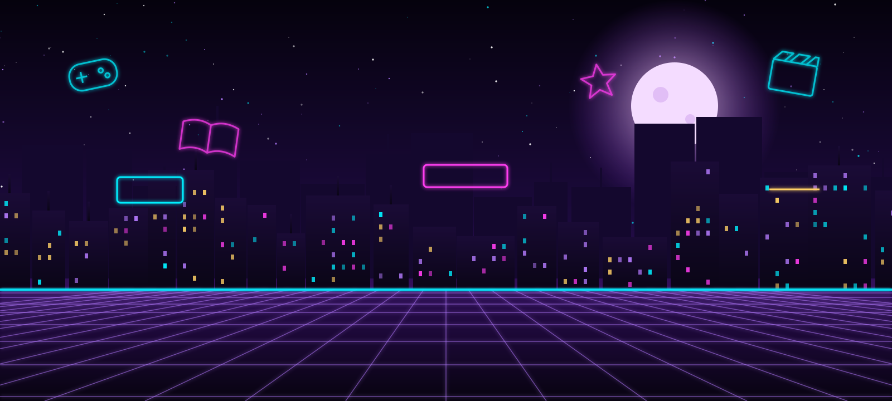
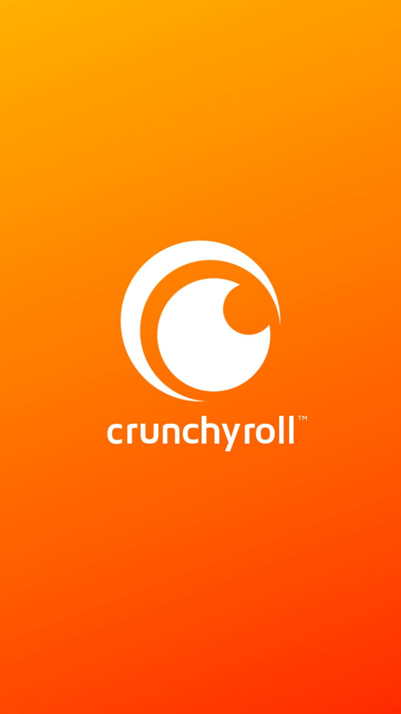
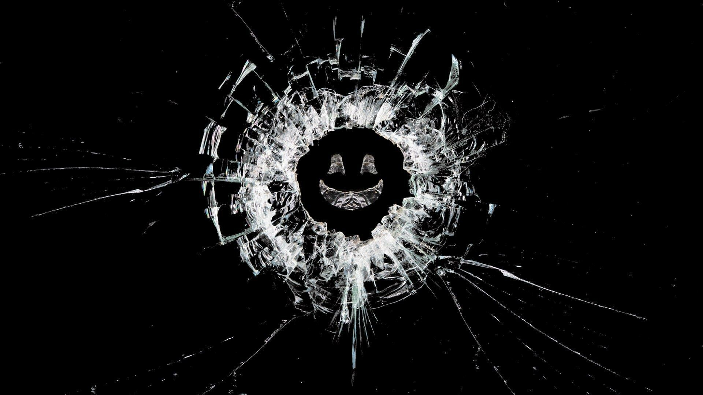
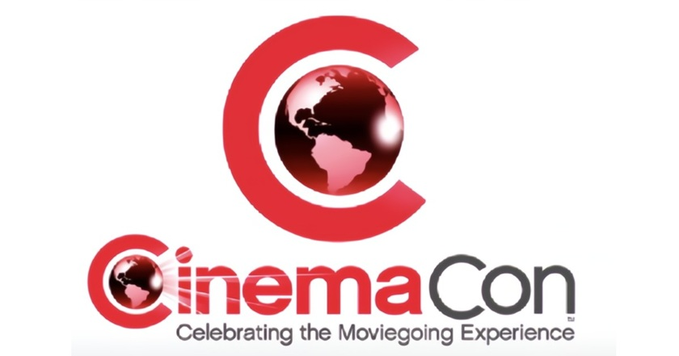
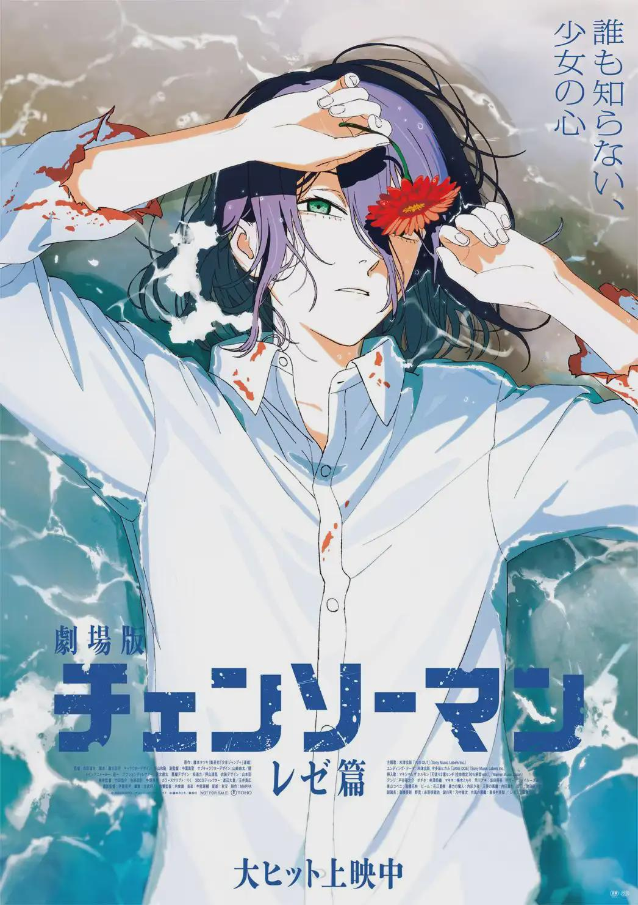

NIGHT LEVEL
📰 Últimas notícias

Crunchyroll anuncia novo app para leitura de mangás
A plataforma vai lançar o app Crunchyroll Manga, inicialmente nos EUA e Canadá, para Android, iOS e, futuramente, web.

Black Mirror retorna em 2025 com 6 novos episódios, incluindo sequência de “USS Callister”
A série antológica da Netflix lança novas histórias e, pela primeira vez, um episódio será continuação direta de um capítulo anterior.

CinemaCon 2025 revela grandes novidades
No evento CinemaCon, estúdios anunciaram novos títulos como Avatar: Fire & Ash, o reboot do Superman por James Gunn e M3GAN 2.0.

Chainsaw Man: The Movie – Arco Reze estreia em 19 de setembro de 2025
A continuação canônica do anime adapta o arco “Bomb Girl” do mangá e foca na relação de Denji com Reze.